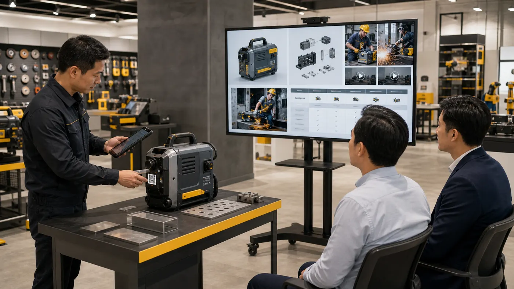

G-ShowP1 Scenario

06
复杂参数销售
汽车 / 设备 / 工程机械
销售或工程师扫码车型、设备或工具标签，电视展示配置、功能视频、工况案例和维护说明。
展示配置对比、功能视频、参数、应用工况、售后维护。
痛点型号多、参数复杂，客户容易只看价格。
卖点把复杂产品转化为可看、可比较的讲解内容。

销售或工程师扫码车型、设备或工具标签，电视展示配置、功能视频、工况案例和维护说明。